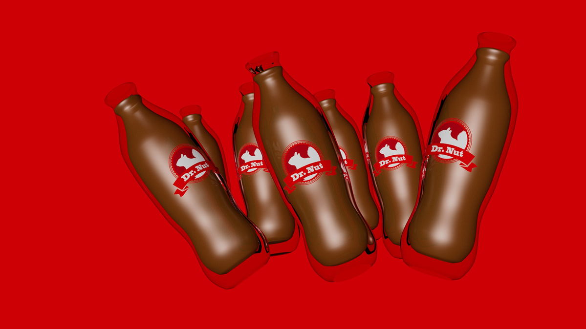
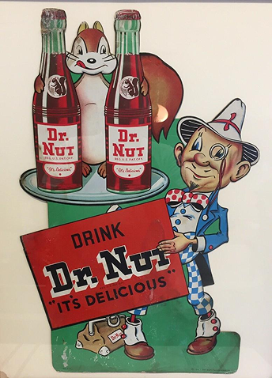
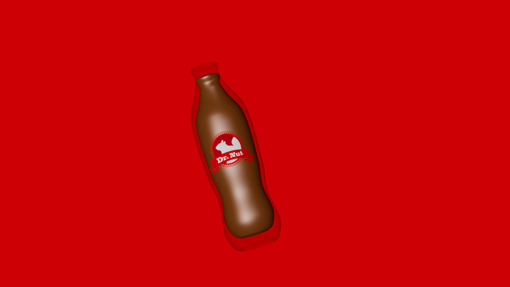

About Hero

About Dr. Nut
Our History

Dr. Nut was originally introduced in the 1930s as an almond-based soda produced by the World Bottling Company in New Orleans. At a time where most beverages had more conventional flavours Dr. Nut stood out as a breath of fresh air. Its unique branding and memorable flavour quickly earned it a loyal following among residents of New Orleans.
As its popularity grew it became a part of the city's cultural identity. While it hasn't been produced since the late 1970s there are still those who remember Dr. Nut.
Dr. Nut’s Past
Dr. Nut was beloved by generations of New Orleans residents and it deserves to be remembered as more than just a relic of the past. Its unique flavour and its popularity made it more than just another drink, it was a part of everyday life.
Rather than allowing it to fade into the past as another failed brand we hope to preserve its legacy and bring it into the future.

Our Future!
Dr. Nut Future

Dr. Nut is back and better than ever! Our goal is to honour the original recipe and its fans while bringing the brand into a new era. We believe that the original shouldn’t be left in the past but evolved to bring it into the future.
With a new visual identity and a modern rebrand Dr. Nut keeps what made it so popular while bringing it into the modern age. We are keeping the original recipe while introducing variants, such as diet Dr. Nut, to introduce the drink to a whole new generation of fans.
Sign Up For the Newsletter!
Join the Dr. Nut community and stay up to date on promotions, news, and any new updates on your favourite drink, Dr. Nut!